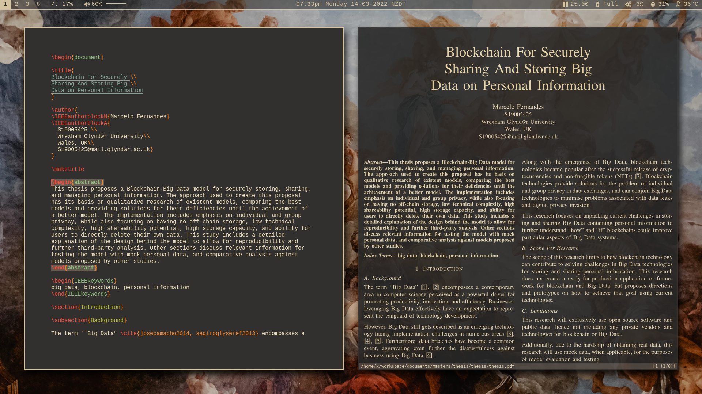
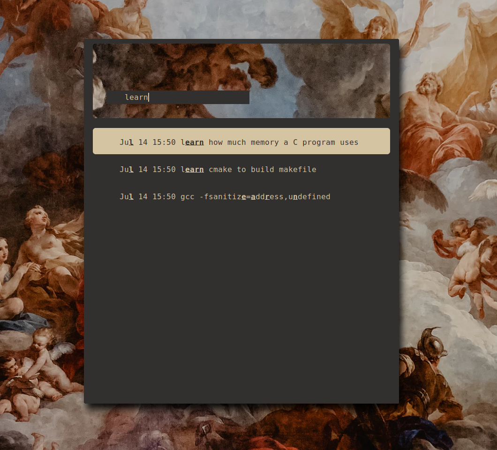
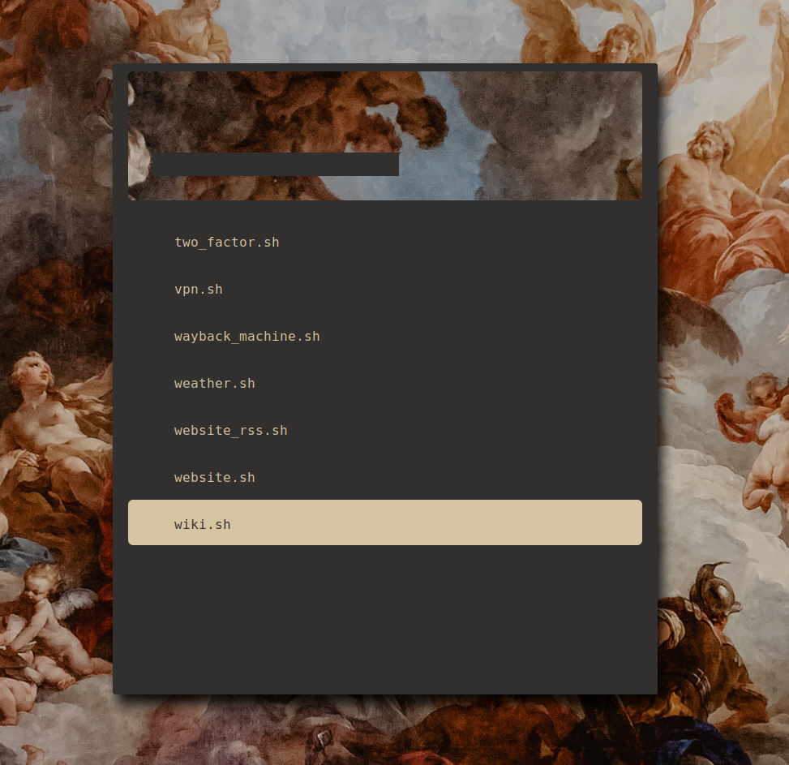
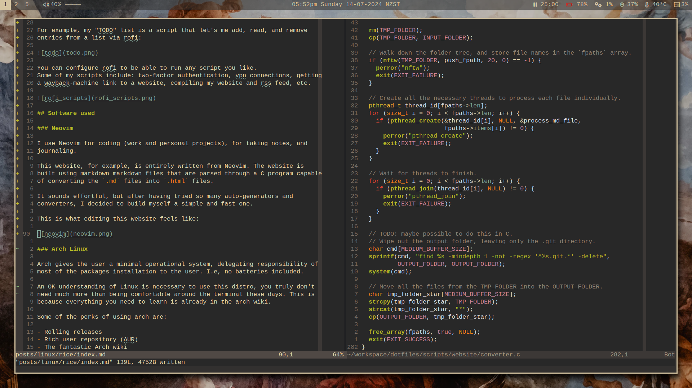

Created: 2020-08-30
Updated: 2024-07-06
When someone is "ricing" their unix system, they are making functional and visual customisations to their desktop. These changes could be anything from changing the colour of a status bar to completely restructuring their computer environment.
Why?

$ neofetch
-` x@x
.o+` ---
`ooo/ OS: Arch Linux x86_64
`+oooo: Host: 20Q5S01400 ThinkPad L490
`+oooooo: Kernel: 6.6.39-1-lts
-+oooooo+: Uptime: 1 hour, 32 mins
`/:-:++oooo+: Packages: 519 (pacman)
`/++++/+++++++: Shell: bash 5.2.26
`/++++++++++++++: Resolution: 1920x1080
`/+++ooooooooooooo/` WM: i3
./ooosssso++osssssso+` Theme: Adwaita [GTK2/3]
.oossssso-````/ossssss+` Icons: Adwaita [GTK2/3]
-osssssso. :ssssssso. Terminal: alacritty
:osssssss/ osssso+++. Terminal Font: LiterationMono Nerd Font
/ossssssss/ +ssssooo/- CPU: Intel i7-8565U (8) @ 4.600GHz
`/ossssso+/:- -:/+osssso+- GPU: Intel WhiskeyLake-U GT2 [UHD Graphics 620]
`+sso+:-` `.-/+oso: Memory: 1571MiB / 7134MiB
`++:. `-/+/
.` `/
du -h /
# 5.6G
Most of my tools revolve around rofi which is an application launcher.
For example, my "TODO" list is a script that let's me add, read, and remove entries from a list via rofi:

You can configure rofi to be able to run any script you like. Some of my scripts include: two-factor authentication, vpn connections, getting a wayback-machine link to a website, compiling my website and rss feed, etc.

I use Neovim for coding (work and personal projects), for taking notes, and journaling.
This website, for example, is entirely written from Neovim. The website is
built using markdown files that are parsed through a C program capable
of converting the .md files into .html files.
After having tried so many auto-generators and converters, I decided to build myself a simple and fast one. It was also such a fun C project.
This is what editing this website feels like along with a snippet of the C
code used to compile the .md files into .html:

Arch has been my daily driver since 2019. Before that, I've used Linux Mint and Ubuntu at work; back when I didn't care and didn't know the differences between all the flavours of Linux. I have also had to use MacOS for a job where the company mandated developers to use Apple machines.
I have tried other different flavours of Linux on virtual machines in the past, but I decided to stick with Arch Linux given how simple it is to customise.
That means I can use my simple bash script to download and auto-configure my system without manual intervention. I can also sync my environment between my work laptop and my personal laptop with one command. Apart from the hardware, all my machines are identical from a user's experience.
An basic understanding of Linux is necessary to use this distro. You don't need
much more than being comfortable around the terminal these days. This is
because everything you need to learn is already in the arch wiki and arch now
has assisted installation scripts via archinstall.
Some other perks of using arch are:
i3-gaps is a fork of the i3wm (tilling window manager) for X11. Instead of having stacked windows that overlap (like in microsoft windows, or macOs), windows are organized side-by-side as default, having gaps between them. The benefits are:
Polybar is was the easiest and most user-friendly status bar I could find. With a lot of pre-configured setups and out-of-the-box integrations, getting up to speed was very simple.
A very simple and configurable application/script launcher.
For setting colours and themes.
When it comes to finding inspiration for ricing in Linux, a good place to look at is /r/unixporn. Most of my setup came from picking apart different rices that users have shared in that channel. It is also a good place to visit once in a while to stay up-to-date with what the rest of the community is using and trying.